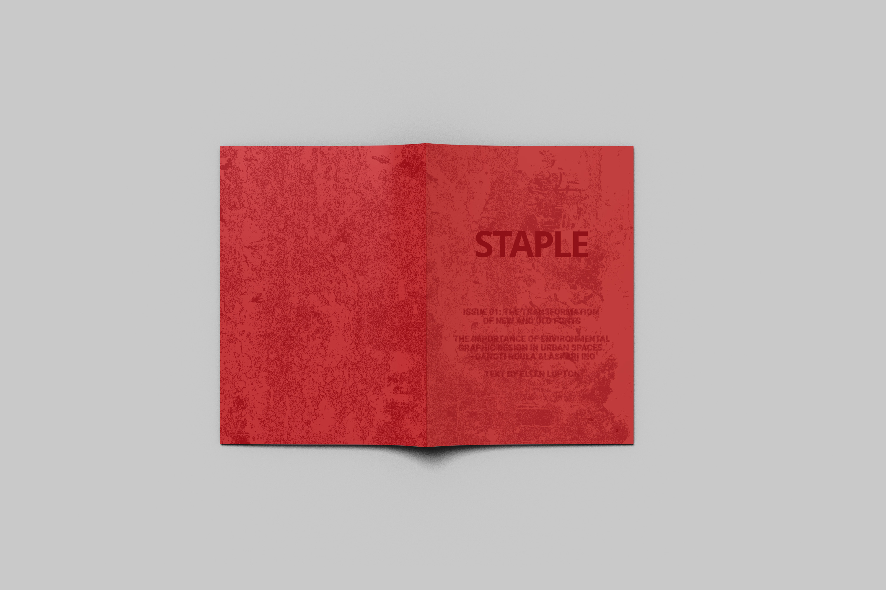

"STAPLE"
(Magazine
design)
Typography
exploration
"STAPLE" was created inspired by photos of the New Town neighborhood, where I found many buildings eroded by time. They are like staples, giving the entire community a unique style. Rusty steel pipes, walls covered with vines, worn zebra crossings, and posters torn countless times. This community is a modern blend with rusty, nostalgic fonts on old mailboxes, pipes, graffiti-covered walls and billboards. Based on this, I define this concept as the subtle connection between fonts in a trendy and nostalgic setting.
